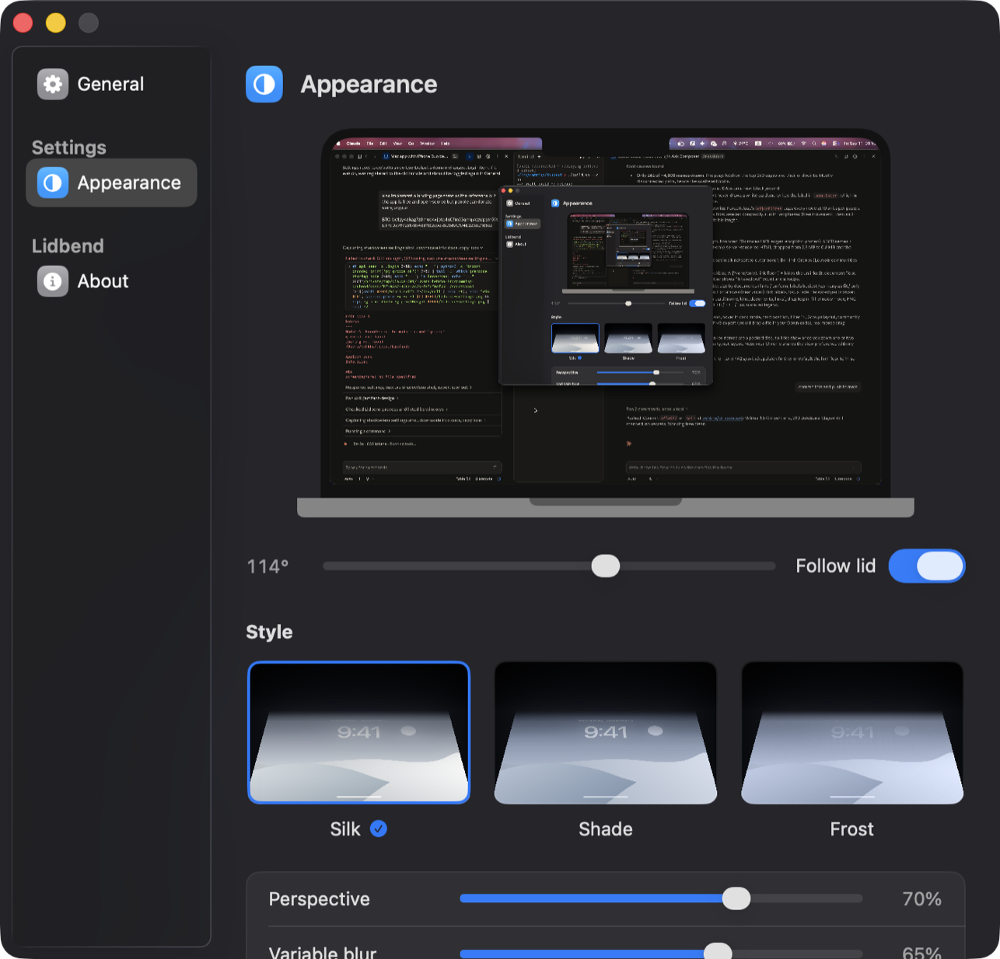

Your desktop bends as you close the lid.
The fluid fold from iPhone Duo, for the lid you already have. Your desktop tilts, blurs and settles as it comes down.
No account, no license key, no telemetry. If it makes you smile, send a coin.
Not notarized, so macOS blocks the first launch. Allow it once under System Settings › Privacy & Security › Open Anyway.

How it works
- Lid sensor
- Reads the hinge angle from the Mac's own sensor over HID. No polling tricks, no accessibility hacks.
- Live desktop
- Captures the screen with ScreenCaptureKit and renders the tilt in Metal, so windows and wallpaper move together.
- Three styles
- Silk, Shade and Frost. Tune perspective, blur and shadow, or set the angle where it clears.
- Sound
- A soft click when the lid opens and the desktop clears. Switch it off in General if you'd rather not.
- Menu bar
- Lives quietly in the menu bar. Pause with a click.
Requirements
- macOS
- 14 Sonoma or later.
- Hardware
- Apple silicon MacBook with a lid angle sensor. Other Macs get a manual angle slider.
- Permissions
- Screen Recording, so the desktop can be captured. Asked once, from a button, never on launch.
- Install
- Unzip, drag to Applications, open. There is no Apple developer account behind Lidbend, so the first launch is blocked: System Settings › Privacy & Security › Open Anyway. Or clear the quarantine flag:
xattr -dr com.apple.quarantine /Applications/Lidbend.app
Free and open source
- On device
- Frames are processed on your Mac. Nothing is recorded, saved or uploaded.
- No account
- Download, drag to Applications, done. No license key, no sign-in, no telemetry.
- Build it yourself
- Swift package, no Xcode project.
git clone https://github.com/behkha/lidbendthen./build.sh --run.
Support the project
Lidbend is free and stays free. If it made you smile, a coin keeps the hinge oiled. Scan or copy; the address is all there is.
BitcoinBTC · native SegWit
bc1qy46kag7z0muc4xjptq4x07m53qmqyczwpsm59t
EthereumETH · mainnet, ERC-20 welcome
0x9972519894861132cbc98D869C174E2235D165c2
Prefer to help another way? Bugs and pull requests on GitHub are just as welcome.